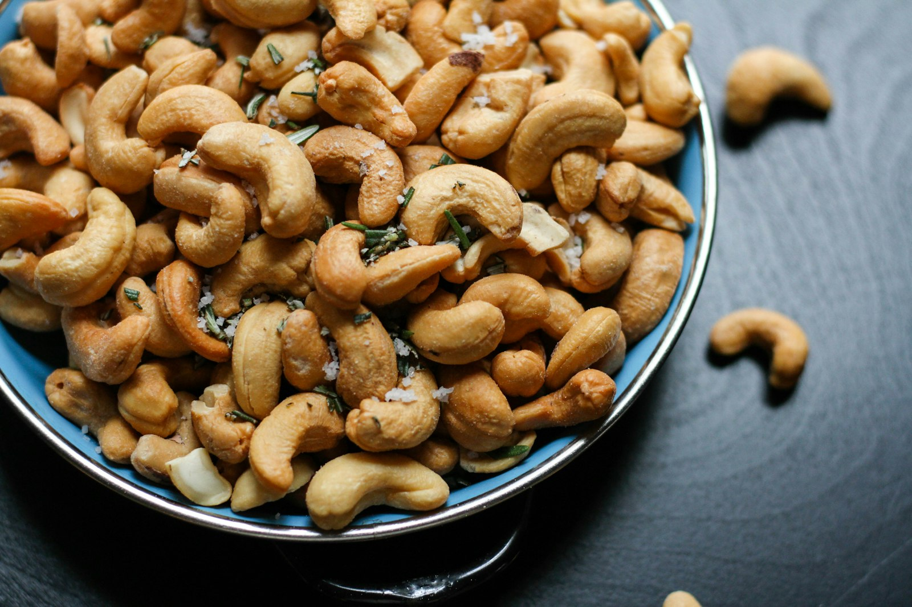

Nutrition
Benefits, comparisons, and clear answers — made beautiful.

Benefits of nuts
Nuts bring dietary fibre, healthy fats, and plant protein in a small handful. Cashews offer a creamy mineral-rich bite; almonds deliver vitamin E and a satisfying crunch — both support steady energy and everyday wellness.
Curious how they compare? Use the nutrition tool below, then explore our allergy cards for practical answers.
Nut nutrition
per 28 g · 1 oz handful